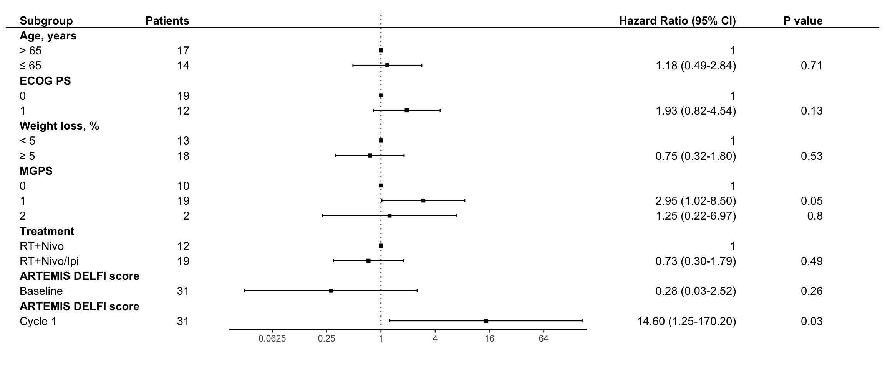

Last updated: 2025-03-27
Checks: 6 1
Knit directory: hruban_wflow/
This reproducible R Markdown analysis was created with workflowr (version 1.7.1). The Checks tab describes the reproducibility checks that were applied when the results were created. The Past versions tab lists the development history.
The R Markdown file has staged changes. To know which version of the
R Markdown file created these results, you’ll want to first commit it to
the Git repo. If you’re still working on the analysis, you can ignore
this warning. When you’re finished, you can run
wflow_publish to commit the R Markdown file and build the
HTML.
Great job! The global environment was empty. Objects defined in the global environment can affect the analysis in your R Markdown file in unknown ways. For reproduciblity it’s best to always run the code in an empty environment.
The command set.seed(20250319) was run prior to running
the code in the R Markdown file. Setting a seed ensures that any results
that rely on randomness, e.g. subsampling or permutations, are
reproducible.
Great job! Recording the operating system, R version, and package versions is critical for reproducibility.
Nice! There were no cached chunks for this analysis, so you can be confident that you successfully produced the results during this run.
Great job! Using relative paths to the files within your workflowr project makes it easier to run your code on other machines.
Great! You are using Git for version control. Tracking code development and connecting the code version to the results is critical for reproducibility.
The results in this page were generated with repository version 6dc79eb. See the Past versions tab to see a history of the changes made to the R Markdown and HTML files.
Note that you need to be careful to ensure that all relevant files for
the analysis have been committed to Git prior to generating the results
(you can use wflow_publish or
wflow_git_commit). workflowr only checks the R Markdown
file, but you know if there are other scripts or data files that it
depends on. Below is the status of the Git repository when the results
were generated:
Ignored files:
Ignored: .DS_Store
Ignored: code/rlucas/.DS_Store
Ignored: data/estimates/.Rapp.history
Untracked files:
Untracked: README.Rmd
Untracked: code/pivot_wider_pacto.R
Untracked: data/allfeatures_pacto.5mb.hg19.csv
Untracked: extdata/
Untracked: output/process_tcga_beta.Rmd/
Unstaged changes:
Modified: .gitignore
Modified: README.md
Staged changes:
Modified: analysis/about.Rmd
New: analysis/ext-fig1.Rmd
New: analysis/ext-fig10.Rmd
New: analysis/ext-fig11.Rmd
New: analysis/ext-fig12.Rmd
New: analysis/ext-fig13.Rmd
New: analysis/ext-fig14.Rmd
New: analysis/ext-fig15.Rmd
New: analysis/ext-fig16a.Rmd
New: analysis/ext-fig16b.Rmd
New: analysis/ext-fig17.Rmd
New: analysis/ext-fig18.Rmd
New: analysis/ext-fig19.Rmd
New: analysis/ext-fig20.Rmd
New: analysis/ext-fig21a.Rmd
New: analysis/ext-fig21b.Rmd
New: analysis/ext-fig22a.Rmd
New: analysis/ext-fig22b.Rmd
New: analysis/ext-fig23a.Rmd
New: analysis/ext-fig23b.Rmd
New: analysis/ext-fig24.Rmd
New: analysis/ext-fig2a.Rmd
New: analysis/ext-fig2b.Rmd
New: analysis/ext-fig3.Rmd
New: analysis/ext-fig4.Rmd
New: analysis/ext-fig5.Rmd
New: analysis/ext-fig6.Rmd
New: analysis/ext-fig7.Rmd
New: analysis/ext-fig8.Rmd
New: analysis/ext-fig9.Rmd
New: analysis/fig1a.Rmd
New: analysis/fig1b.Rmd
New: analysis/fig2a.Rmd
New: analysis/fig2b.Rmd
New: analysis/fig2c.Rmd
New: analysis/fig3a.Rmd
New: analysis/fig3b.Rmd
New: analysis/fig4.Rmd
New: analysis/fig5.Rmd
New: analysis/fig6a.Rmd
New: analysis/fig6b.Rmd
New: analysis/fig6c.Rmd
New: analysis/fig7a.Rmd
New: analysis/fig7b.Rmd
New: analysis/fig8.Rmd
New: analysis/fig9a.Rmd
New: analysis/fig9b.Rmd
Modified: analysis/index.Rmd
Modified: analysis/license.Rmd
New: code/functions.R
New: code/hr_plot_funcs.R
New: code/liver.tools/DESCRIPTION
New: code/liver.tools/NAMESPACE
New: code/liver.tools/R/functions.R
New: code/liver.tools/R/help.R
New: code/liver.tools/man/liver.tools.Rd
New: code/liver.tools/zzz.R
New: code/process_ab.Rmd
New: code/process_tcga_beta.Rmd
New: code/rlucas/DESCRIPTION
New: code/rlucas/NAMESPACE
New: code/rlucas/R/functions.R
New: code/rlucas/R/help.R
New: code/rlucas/data-derived/SummarizedExperiment.R
New: code/rlucas/data/lucas_5mb.rda
New: code/rlucas/data/metadata.rda
New: code/rlucas/data/prediction_lucas.rda
New: code/rlucas/data/se.rda
New: code/rlucas/data/valid_metadata.rda
New: code/rlucas/inst/extdata/survival_analysis_samples.xlsx
New: code/rlucas/man/rlucas.Rd
New: code/useful.stuff.aa/DESCRIPTION
New: code/useful.stuff.aa/NAMESPACE
New: code/useful.stuff.aa/R/convenience.R
New: code/useful.stuff.aa/R/models.R
New: code/useful.stuff.aa/data/liver_meta.rda
New: code/useful.stuff.aa/data/lucas_meta.rda
New: code/utility_funcs.R
New: data/120122_mutations.csv
New: data/CA199.csv
New: data/CP_PAC_artemis.xlsx
New: data/CheckPAC_clinical_annotated011622.xlsx
New: data/Checkpac_Test.csv
New: data/Expected.csv
New: data/ID_comparison.xlsx
New: data/Locked_Models/ARTEMIS_DELFI_SSls_Ensemble.rds
New: data/Locked_Models/ARTEMIS_DELFI_raw_Ensemble.rds
New: data/Locked_Models/ARTEMIS_Ensemble.rds
New: data/Locked_Models/ARTEMIS_Mathios_Ensemble.rds
New: data/Locked_Models/ARTEMIS_single_DELFI_SSLs_Ensemble.rds
New: data/Locked_Models/ARTEMIS_single_DELFI_raw_Ensemble.rds
New: data/Locked_Models/ARTEMIS_single_Mathios_Ensemble.rds
New: data/Locked_Models/Epi_ssl.rds
New: data/Locked_Models/LINE_ssl.rds
New: data/Locked_Models/LTR_ssl.rds
New: data/Locked_Models/Mathios_DELFI.rds
New: data/Locked_Models/RNA_TE_ssl.rds
New: data/Locked_Models/Ratios_ssl.rds
New: data/Locked_Models/SINE_ssl.rds
New: data/Locked_Models/Sat_ssl.rds
New: data/Locked_Models/zscores_ssl.rds
New: data/PACTO Masterfile.xlsx
New: data/PACTO_BL_EOT_EOS_PFS_TA_jh.xlsx
New: data/Test_set_pacto.csv
New: data/artemis.csv
New: data/barv1.csv
New: data/cellularity.csv
New: data/checkpac_5mb_bins/CGH16N_16_5mb.hg19.csv
New: data/checkpac_5mb_bins/CGH16N_17_5mb.hg19.csv
New: data/checkpac_5mb_bins/CGH16N_18_5mb.hg19.csv
New: data/checkpac_5mb_bins/CGH16N_19_5mb.hg19.csv
New: data/checkpac_5mb_bins/CGH16N_20_5mb.hg19.csv
New: data/checkpac_5mb_bins/CGH16N_21_5mb.hg19.csv
New: data/checkpac_5mb_bins/CGH16N_22_5mb.hg19.csv
New: data/checkpac_5mb_bins/CGH16N_23_5mb.hg19.csv
New: data/checkpac_5mb_bins/CGH16N_24_5mb.hg19.csv
New: data/checkpac_5mb_bins/CGH16N_25_5mb.hg19.csv
New: data/checkpac_5mb_bins/CGH16N_26_5mb.hg19.csv
New: data/checkpac_5mb_bins/CGPLPA217P1_5mb.hg19.csv
New: data/checkpac_5mb_bins/CGPLPA217P2_5mb.hg19.csv
New: data/checkpac_5mb_bins/CGPLPA217P3_5mb.hg19.csv
New: data/checkpac_5mb_bins/CGPLPA217P4_5mb.hg19.csv
New: data/checkpac_5mb_bins/CGPLPA217P5_5mb.hg19.csv
New: data/checkpac_5mb_bins/CGPLPA217P6_5mb.hg19.csv
New: data/checkpac_5mb_bins/CGPLPA217P7_5mb.hg19.csv
New: data/checkpac_5mb_bins/CGPLPA217P8_5mb.hg19.csv
New: data/checkpac_5mb_bins/CGPLPA217P_5mb.hg19.csv
New: data/checkpac_5mb_bins/CGPLPA218P1_5mb.hg19.csv
New: data/checkpac_5mb_bins/CGPLPA218P_5mb.hg19.csv
New: data/checkpac_5mb_bins/CGPLPA219P1_5mb.hg19.csv
New: data/checkpac_5mb_bins/CGPLPA219P2_5mb.hg19.csv
New: data/checkpac_5mb_bins/CGPLPA219P3_5mb.hg19.csv
New: data/checkpac_5mb_bins/CGPLPA219P4_5mb.hg19.csv
New: data/checkpac_5mb_bins/CGPLPA219P5_5mb.hg19.csv
New: data/checkpac_5mb_bins/CGPLPA219P6_5mb.hg19.csv
New: data/checkpac_5mb_bins/CGPLPA220P1_5mb.hg19.csv
New: data/checkpac_5mb_bins/CGPLPA220P2_5mb.hg19.csv
New: data/checkpac_5mb_bins/CGPLPA220P3_5mb.hg19.csv
New: data/checkpac_5mb_bins/CGPLPA221P2_5mb.hg19.csv
New: data/checkpac_5mb_bins/CGPLPA221P3_5mb.hg19.csv
New: data/checkpac_5mb_bins/CGPLPA221P_5mb.hg19.csv
New: data/checkpac_5mb_bins/CGPLPA222P10_5mb.hg19.csv
New: data/checkpac_5mb_bins/CGPLPA222P11_5mb.hg19.csv
New: data/checkpac_5mb_bins/CGPLPA222P12_5mb.hg19.csv
New: data/checkpac_5mb_bins/CGPLPA222P13_5mb.hg19.csv
New: data/checkpac_5mb_bins/CGPLPA222P14_5mb.hg19.csv
New: data/checkpac_5mb_bins/CGPLPA222P15_5mb.hg19.csv
New: data/checkpac_5mb_bins/CGPLPA222P16_5mb.hg19.csv
New: data/checkpac_5mb_bins/CGPLPA222P17_5mb.hg19.csv
New: data/checkpac_5mb_bins/CGPLPA222P1_5mb.hg19.csv
New: data/checkpac_5mb_bins/CGPLPA222P2_5mb.hg19.csv
New: data/checkpac_5mb_bins/CGPLPA222P3_5mb.hg19.csv
New: data/checkpac_5mb_bins/CGPLPA222P4_5mb.hg19.csv
New: data/checkpac_5mb_bins/CGPLPA222P5_5mb.hg19.csv
New: data/checkpac_5mb_bins/CGPLPA222P7_5mb.hg19.csv
New: data/checkpac_5mb_bins/CGPLPA222P8_5mb.hg19.csv
New: data/checkpac_5mb_bins/CGPLPA222P9_5mb.hg19.csv
New: data/checkpac_5mb_bins/CGPLPA222P_5mb.hg19.csv
New: data/checkpac_5mb_bins/CGPLPA223P10_5mb.hg19.csv
New: data/checkpac_5mb_bins/CGPLPA223P11_5mb.hg19.csv
New: data/checkpac_5mb_bins/CGPLPA223P12_5mb.hg19.csv
New: data/checkpac_5mb_bins/CGPLPA223P14_5mb.hg19.csv
New: data/checkpac_5mb_bins/CGPLPA223P15_5mb.hg19.csv
New: data/checkpac_5mb_bins/CGPLPA223P16_5mb.hg19.csv
New: data/checkpac_5mb_bins/CGPLPA223P17_5mb.hg19.csv
New: data/checkpac_5mb_bins/CGPLPA223P18_5mb.hg19.csv
New: data/checkpac_5mb_bins/CGPLPA223P2_5mb.hg19.csv
New: data/checkpac_5mb_bins/CGPLPA223P3_5mb.hg19.csv
New: data/checkpac_5mb_bins/CGPLPA223P6_5mb.hg19.csv
New: data/checkpac_5mb_bins/CGPLPA223P7_5mb.hg19.csv
New: data/checkpac_5mb_bins/CGPLPA223P8_5mb.hg19.csv
New: data/checkpac_5mb_bins/CGPLPA223P9_5mb.hg19.csv
New: data/checkpac_5mb_bins/CGPLPA223P_5mb.hg19.csv
New: data/checkpac_5mb_bins/CGPLPA224P10_5mb.hg19.csv
New: data/checkpac_5mb_bins/CGPLPA224P11_5mb.hg19.csv
New: data/checkpac_5mb_bins/CGPLPA224P12_5mb.hg19.csv
New: data/checkpac_5mb_bins/CGPLPA224P13_5mb.hg19.csv
New: data/checkpac_5mb_bins/CGPLPA224P14_5mb.hg19.csv
New: data/checkpac_5mb_bins/CGPLPA224P15_5mb.hg19.csv
New: data/checkpac_5mb_bins/CGPLPA224P16_5mb.hg19.csv
New: data/checkpac_5mb_bins/CGPLPA224P17_5mb.hg19.csv
New: data/checkpac_5mb_bins/CGPLPA224P18_5mb.hg19.csv
New: data/checkpac_5mb_bins/CGPLPA224P19_5mb.hg19.csv
New: data/checkpac_5mb_bins/CGPLPA224P1_5mb.hg19.csv
New: data/checkpac_5mb_bins/CGPLPA224P20_5mb.hg19.csv
New: data/checkpac_5mb_bins/CGPLPA224P21_5mb.hg19.csv
New: data/checkpac_5mb_bins/CGPLPA224P22_5mb.hg19.csv
New: data/checkpac_5mb_bins/CGPLPA224P23_5mb.hg19.csv
New: data/checkpac_5mb_bins/CGPLPA224P24_5mb.hg19.csv
New: data/checkpac_5mb_bins/CGPLPA224P25_5mb.hg19.csv
New: data/checkpac_5mb_bins/CGPLPA224P2_5mb.hg19.csv
New: data/checkpac_5mb_bins/CGPLPA224P3_5mb.hg19.csv
New: data/checkpac_5mb_bins/CGPLPA224P4_5mb.hg19.csv
New: data/checkpac_5mb_bins/CGPLPA224P6_5mb.hg19.csv
New: data/checkpac_5mb_bins/CGPLPA224P7_5mb.hg19.csv
New: data/checkpac_5mb_bins/CGPLPA224P8_5mb.hg19.csv
New: data/checkpac_5mb_bins/CGPLPA224P9_5mb.hg19.csv
New: data/checkpac_5mb_bins/CGPLPA224P_5mb.hg19.csv
New: data/checkpac_5mb_bins/CGPLPA226P1_5mb.hg19.csv
New: data/checkpac_5mb_bins/CGPLPA226P2_5mb.hg19.csv
New: data/checkpac_5mb_bins/CGPLPA226P_5mb.hg19.csv
New: data/checkpac_5mb_bins/CGPLPA765P1_5mb.hg19.csv
New: data/checkpac_5mb_bins/CGPLPA765P2_5mb.hg19.csv
New: data/checkpac_5mb_bins/CGPLPA765P_5mb.hg19.csv
New: data/checkpac_5mb_bins/CGPLPA766P1_5mb.hg19.csv
New: data/checkpac_5mb_bins/CGPLPA766P_5mb.hg19.csv
New: data/checkpac_5mb_bins/CGPLPA767P1_5mb.hg19.csv
New: data/checkpac_5mb_bins/CGPLPA767P2_5mb.hg19.csv
New: data/checkpac_5mb_bins/CGPLPA767P3_5mb.hg19.csv
New: data/checkpac_5mb_bins/CGPLPA767P4_5mb.hg19.csv
New: data/checkpac_5mb_bins/CGPLPA767P5_5mb.hg19.csv
New: data/checkpac_5mb_bins/CGPLPA767P6_5mb.hg19.csv
New: data/checkpac_5mb_bins/CGPLPA767P_5mb.hg19.csv
New: data/checkpac_5mb_bins/CGPLPA768P1_5mb.hg19.csv
New: data/checkpac_5mb_bins/CGPLPA768P2_5mb.hg19.csv
New: data/checkpac_5mb_bins/CGPLPA768P3_5mb.hg19.csv
New: data/checkpac_5mb_bins/CGPLPA768P4_5mb.hg19.csv
New: data/checkpac_5mb_bins/CGPLPA768P5_5mb.hg19.csv
New: data/checkpac_5mb_bins/CGPLPA768P6_5mb.hg19.csv
New: data/checkpac_5mb_bins/CGPLPA768P_5mb.hg19.csv
New: data/checkpac_5mb_bins/CGPLPA769P1_5mb.hg19.csv
New: data/checkpac_5mb_bins/CGPLPA769P_5mb.hg19.csv
New: data/checkpac_5mb_bins/CGPLPA770P1_5mb.hg19.csv
New: data/checkpac_5mb_bins/CGPLPA770P2_5mb.hg19.csv
New: data/checkpac_5mb_bins/CGPLPA770P3_5mb.hg19.csv
New: data/checkpac_5mb_bins/CGPLPA770P4_5mb.hg19.csv
New: data/checkpac_5mb_bins/CGPLPA770P5_5mb.hg19.csv
New: data/checkpac_5mb_bins/CGPLPA770P6_5mb.hg19.csv
New: data/checkpac_5mb_bins/CGPLPA770P7_5mb.hg19.csv
New: data/checkpac_5mb_bins/CGPLPA770P_5mb.hg19.csv
New: data/checkpac_5mb_bins/CGPLPA771P1_5mb.hg19.csv
New: data/checkpac_5mb_bins/CGPLPA771P2_5mb.hg19.csv
New: data/checkpac_5mb_bins/CGPLPA771P_5mb.hg19.csv
New: data/checkpac_5mb_bins/CGPLPA772P1_5mb.hg19.csv
New: data/checkpac_5mb_bins/CGPLPA772P2_5mb.hg19.csv
New: data/checkpac_5mb_bins/CGPLPA772P3_5mb.hg19.csv
New: data/checkpac_5mb_bins/CGPLPA772P_5mb.hg19.csv
New: data/checkpac_5mb_bins/CGPLPA773P1_5mb.hg19.csv
New: data/checkpac_5mb_bins/CGPLPA773P2_5mb.hg19.csv
New: data/checkpac_5mb_bins/CGPLPA773P6_5mb.hg19.csv
New: data/checkpac_5mb_bins/CGPLPA773P_5mb.hg19.csv
New: data/checkpac_5mb_bins/CGPLPA774P2_5mb.hg19.csv
New: data/checkpac_5mb_bins/CGPLPA774P_5mb.hg19.csv
New: data/checkpac_5mb_bins/CGPLPA775P1_5mb.hg19.csv
New: data/checkpac_5mb_bins/CGPLPA775P2_5mb.hg19.csv
New: data/checkpac_5mb_bins/CGPLPA775P3_5mb.hg19.csv
New: data/checkpac_5mb_bins/CGPLPA775P4_5mb.hg19.csv
New: data/checkpac_5mb_bins/CGPLPA775P_5mb.hg19.csv
New: data/checkpac_5mb_bins/CGPLPA776P1_5mb.hg19.csv
New: data/checkpac_5mb_bins/CGPLPA776P2_5mb.hg19.csv
New: data/checkpac_5mb_bins/CGPLPA776P3_5mb.hg19.csv
New: data/checkpac_5mb_bins/CGPLPA776P4_5mb.hg19.csv
New: data/checkpac_5mb_bins/CGPLPA776P_5mb.hg19.csv
New: data/checkpac_5mb_bins/CGPLPA777P1_5mb.hg19.csv
New: data/checkpac_5mb_bins/CGPLPA777P_5mb.hg19.csv
New: data/checkpac_5mb_bins/CGPLPA778P1_5mb.hg19.csv
New: data/checkpac_5mb_bins/CGPLPA778P2_5mb.hg19.csv
New: data/checkpac_5mb_bins/CGPLPA778P_5mb.hg19.csv
New: data/checkpac_5mb_bins/CGPLPA779P1_5mb.hg19.csv
New: data/checkpac_5mb_bins/CGPLPA779P2_5mb.hg19.csv
New: data/checkpac_5mb_bins/CGPLPA779P3_5mb.hg19.csv
New: data/checkpac_5mb_bins/CGPLPA779P_5mb.hg19.csv
New: data/checkpac_5mb_bins/CGPLPA780P1_5mb.hg19.csv
New: data/checkpac_5mb_bins/CGPLPA780P_5mb.hg19.csv
New: data/checkpac_5mb_bins/CGPLPA781P1_5mb.hg19.csv
New: data/checkpac_5mb_bins/CGPLPA781P2_5mb.hg19.csv
New: data/checkpac_5mb_bins/CGPLPA781P3_1_5mb.hg19.csv
New: data/checkpac_5mb_bins/CGPLPA781P4_5mb.hg19.csv
New: data/checkpac_5mb_bins/CGPLPA781P5_5mb.hg19.csv
New: data/checkpac_5mb_bins/CGPLPA781P6_5mb.hg19.csv
New: data/checkpac_5mb_bins/CGPLPA781P_5mb.hg19.csv
New: data/checkpac_5mb_bins/CGPLPA782P1_5mb.hg19.csv
New: data/checkpac_5mb_bins/CGPLPA782P2_5mb.hg19.csv
New: data/checkpac_5mb_bins/CGPLPA782P3_5mb.hg19.csv
New: data/checkpac_5mb_bins/CGPLPA782P4_5mb.hg19.csv
New: data/checkpac_5mb_bins/CGPLPA782P5_5mb.hg19.csv
New: data/checkpac_5mb_bins/CGPLPA782P6_5mb.hg19.csv
New: data/checkpac_5mb_bins/CGPLPA782P_5mb.hg19.csv
New: data/checkpac_5mb_bins/CGPLPA784P1_5mb.hg19.csv
New: data/checkpac_5mb_bins/CGPLPA784P2_5mb.hg19.csv
New: data/checkpac_5mb_bins/CGPLPA784P_5mb.hg19.csv
New: data/checkpac_5mb_bins/CGPLPA785P_5mb.hg19.csv
New: data/checkpac_5mb_bins/CGPLPA786P1_5mb.hg19.csv
New: data/checkpac_5mb_bins/CGPLPA786P2_5mb.hg19.csv
New: data/checkpac_5mb_bins/CGPLPA786P3_5mb.hg19.csv
New: data/checkpac_5mb_bins/CGPLPA786P_5mb.hg19.csv
New: data/checkpac_5mb_bins/CGPLPA787P10_5mb.hg19.csv
New: data/checkpac_5mb_bins/CGPLPA787P11_5mb.hg19.csv
New: data/checkpac_5mb_bins/CGPLPA787P12_5mb.hg19.csv
New: data/checkpac_5mb_bins/CGPLPA787P1_5mb.hg19.csv
New: data/checkpac_5mb_bins/CGPLPA787P2_5mb.hg19.csv
New: data/checkpac_5mb_bins/CGPLPA787P3_5mb.hg19.csv
New: data/checkpac_5mb_bins/CGPLPA787P4_5mb.hg19.csv
New: data/checkpac_5mb_bins/CGPLPA787P5_5mb.hg19.csv
New: data/checkpac_5mb_bins/CGPLPA787P9_5mb.hg19.csv
New: data/checkpac_5mb_bins/CGPLPA787P_5mb.hg19.csv
New: data/checkpac_5mb_bins/CGPLPA788P1_5mb.hg19.csv
New: data/checkpac_5mb_bins/CGPLPA788P2_5mb.hg19.csv
New: data/checkpac_5mb_bins/CGPLPA788P3_5mb.hg19.csv
New: data/checkpac_5mb_bins/CGPLPA788P_5mb.hg19.csv
New: data/checkpac_5mb_bins/CGPLPA789P1_5mb.hg19.csv
New: data/checkpac_5mb_bins/CGPLPA789P6_5mb.hg19.csv
New: data/checkpac_5mb_bins/CGPLPA789P7_5mb.hg19.csv
New: data/checkpac_5mb_bins/CGPLPA789P8_5mb.hg19.csv
New: data/checkpac_5mb_bins/CGPLPA789P9_5mb.hg19.csv
New: data/checkpac_5mb_bins/CGPLPA790P1_5mb.hg19.csv
New: data/checkpac_5mb_bins/CGPLPA790P2_5mb.hg19.csv
New: data/checkpac_5mb_bins/CGPLPA790P3_5mb.hg19.csv
New: data/checkpac_5mb_bins/CGPLPA790P4_5mb.hg19.csv
New: data/checkpac_5mb_bins/CGPLPA791P1_5mb.hg19.csv
New: data/checkpac_5mb_bins/CGPLPA791P2_1_5mb.hg19.csv
New: data/checkpac_5mb_bins/CGPLPA791P_5mb.hg19.csv
New: data/checkpac_5mb_bins/CGPLPA792P1_5mb.hg19.csv
New: data/checkpac_5mb_bins/CGPLPA792P2_5mb.hg19.csv
New: data/checkpac_5mb_bins/CGPLPA792P_5mb.hg19.csv
New: data/checkpac_5mb_bins/CGPLPA793P1_5mb.hg19.csv
New: data/checkpac_5mb_bins/CGPLPA793P2_5mb.hg19.csv
New: data/checkpac_5mb_bins/CGPLPA793P3_5mb.hg19.csv
New: data/checkpac_5mb_bins/CGPLPA794P1_5mb.hg19.csv
New: data/checkpac_5mb_bins/CGPLPA794P2_5mb.hg19.csv
New: data/checkpac_5mb_bins/CGPLPA794P3_5mb.hg19.csv
New: data/checkpac_5mb_bins/CGPLPA794P4_5mb.hg19.csv
New: data/checkpac_5mb_bins/CGPLPA794P5_5mb.hg19.csv
New: data/checkpac_5mb_bins/CGPLPA794P_5mb.hg19.csv
New: data/checkpac_5mb_bins/CGPLPA796P1_5mb.hg19.csv
New: data/checkpac_5mb_bins/CGPLPA796P2_5mb.hg19.csv
New: data/checkpac_5mb_bins/CGPLPA796P_5mb.hg19.csv
New: data/checkpac_5mb_bins/CGPLPA797P1_5mb.hg19.csv
New: data/checkpac_5mb_bins/CGPLPA797P2_5mb.hg19.csv
New: data/checkpac_5mb_bins/CGPLPA797P3_5mb.hg19.csv
New: data/checkpac_5mb_bins/CGPLPA797P4_5mb.hg19.csv
New: data/checkpac_5mb_bins/CGPLPA797P5_5mb.hg19.csv
New: data/checkpac_5mb_bins/CGPLPA797P6_5mb.hg19.csv
New: data/checkpac_5mb_bins/CGPLPA797P7_1_5mb.hg19.csv
New: data/checkpac_5mb_bins/CGPLPA797P_5mb.hg19.csv
New: data/checkpac_baseline_p2_dates.csv
New: data/checkpac_bins.csv
New: data/checkpac_ca199.csv
New: data/checkpac_ca199_baseline_p4_dates.csv
New: data/checkpac_features.csv
New: data/checkpac_plasma_manifest.xlsx
New: data/clinical_073123.xlsx
New: data/combined_bins_102324.rds
New: data/df_results_CAIRO5_2_6_ checkpac_ pacto.tsv
New: data/estimates/CGPLPA217T.cncf.tsv
New: data/estimates/CGPLPA217T.facets.rds
New: data/estimates/CGPLPA218T_rep.cncf.tsv
New: data/estimates/CGPLPA218T_rep.facets.rds
New: data/estimates/CGPLPA219T.cncf.tsv
New: data/estimates/CGPLPA219T.facets.rds
New: data/estimates/CGPLPA220T.cncf.tsv
New: data/estimates/CGPLPA220T.facets.rds
New: data/estimates/CGPLPA221T.cncf.tsv
New: data/estimates/CGPLPA221T.facets.rds
New: data/estimates/CGPLPA222T.cncf.tsv
New: data/estimates/CGPLPA222T.facets.rds
New: data/estimates/CGPLPA223T.cncf.tsv
New: data/estimates/CGPLPA223T.facets.rds
New: data/estimates/CGPLPA224T.cncf.tsv
New: data/estimates/CGPLPA224T.facets.rds
New: data/estimates/CGPLPA225T.cncf.tsv
New: data/estimates/CGPLPA225T.facets.rds
New: data/estimates/CGPLPA226T.cncf.tsv
New: data/estimates/CGPLPA226T.facets.rds
New: data/estimates/CGPLPA765T1.cncf.tsv
New: data/estimates/CGPLPA765T1.facets.rds
New: data/estimates/CGPLPA766T1.cncf.tsv
New: data/estimates/CGPLPA766T1.facets.rds
New: data/estimates/CGPLPA767T2.cncf.tsv
New: data/estimates/CGPLPA767T2.facets.rds
New: data/estimates/CGPLPA768T1.cncf.tsv
New: data/estimates/CGPLPA768T1.facets.rds
New: data/estimates/CGPLPA769T1.cncf.tsv
New: data/estimates/CGPLPA769T1.facets.rds
New: data/estimates/CGPLPA771T3.cncf.tsv
New: data/estimates/CGPLPA771T3.facets.rds
New: data/estimates/CGPLPA772T2.cncf.tsv
New: data/estimates/CGPLPA772T2.facets.rds
New: data/estimates/CGPLPA773T3.cncf.tsv
New: data/estimates/CGPLPA773T3.facets.rds
New: data/estimates/CGPLPA774T1.cncf.tsv
New: data/estimates/CGPLPA774T1.facets.rds
New: data/estimates/CGPLPA775T3.cncf.tsv
New: data/estimates/CGPLPA775T3.facets.rds
New: data/estimates/CGPLPA777T3.cncf.tsv
New: data/estimates/CGPLPA777T3.facets.rds
New: data/estimates/CGPLPA779T.cncf.tsv
New: data/estimates/CGPLPA779T.facets.rds
New: data/estimates/CGPLPA780T3.cncf.tsv
New: data/estimates/CGPLPA780T3.facets.rds
New: data/estimates/CGPLPA781T.cncf.tsv
New: data/estimates/CGPLPA781T.facets.rds
New: data/estimates/CGPLPA783T.cncf.tsv
New: data/estimates/CGPLPA783T.facets.rds
New: data/estimates/CGPLPA785T.cncf.tsv
New: data/estimates/CGPLPA785T.facets.rds
New: data/estimates/CGPLPA786T.cncf.tsv
New: data/estimates/CGPLPA786T.facets.rds
New: data/estimates/CGPLPA787T.cncf.tsv
New: data/estimates/CGPLPA787T.facets.rds
New: data/estimates/CGPLPA788T1.cncf.tsv
New: data/estimates/CGPLPA788T1.facets.rds
New: data/estimates/CGPLPA789T3.cncf.tsv
New: data/estimates/CGPLPA789T3.facets.rds
New: data/estimates/CGPLPA790T.cncf.tsv
New: data/estimates/CGPLPA790T.facets.rds
New: data/estimates/CGPLPA791T1.cncf.tsv
New: data/estimates/CGPLPA791T1.facets.rds
New: data/estimates/CGPLPA792T1.cncf.tsv
New: data/estimates/CGPLPA792T1.facets.rds
New: data/estimates/CGPLPA794T.cncf.tsv
New: data/estimates/CGPLPA794T.facets.rds
New: data/estimates/CGPLPA795T1.cncf.tsv
New: data/estimates/CGPLPA795T1.facets.rds
New: data/estimates/CGPLPA796T1.cncf.tsv
New: data/estimates/CGPLPA796T1.facets.rds
New: data/estimates/CGPLPA797T1.cncf.tsv
New: data/estimates/CGPLPA797T1.facets.rds
New: data/fig2c_p2_data.rds
New: data/for_leal_plot_042324.xlsx
New: data/fp2_lucas_healthy.csv
New: data/i07_input.xlsx
New: data/loadings.rds
New: data/long_bins.csv
New: data/pacto_5mb_bins/CGH17N_17_5mb.hg19.csv
New: data/pacto_5mb_bins/CGH17N_18_5mb.hg19.csv
New: data/pacto_5mb_bins/CGH17N_19_5mb.hg19.csv
New: data/pacto_5mb_bins/CGH17N_20_5mb.hg19.csv
New: data/pacto_5mb_bins/CGH17N_21_5mb.hg19.csv
New: data/pacto_5mb_bins/CGH17N_22_5mb.hg19.csv
New: data/pacto_5mb_bins/CGH17N_23_5mb.hg19.csv
New: data/pacto_5mb_bins/CGH17N_24_5mb.hg19.csv
New: data/pacto_5mb_bins/CGH17N_25_5mb.hg19.csv
New: data/pacto_5mb_bins/CGH17N_26_5mb.hg19.csv
New: data/pacto_5mb_bins/CGH17N_27_5mb.hg19.csv
New: data/pacto_5mb_bins/CGH17N_28_5mb.hg19.csv
New: data/pacto_5mb_bins/CGH17N_29_5mb.hg19.csv
New: data/pacto_5mb_bins/CGH17N_30_5mb.hg19.csv
New: data/pacto_5mb_bins/CGPLPA248P1_5mb.hg19.csv
New: data/pacto_5mb_bins/CGPLPA248P2_5mb.hg19.csv
New: data/pacto_5mb_bins/CGPLPA248P3_5mb.hg19.csv
New: data/pacto_5mb_bins/CGPLPA248P4_5mb.hg19.csv
New: data/pacto_5mb_bins/CGPLPA248P5_5mb.hg19.csv
New: data/pacto_5mb_bins/CGPLPA248P6_5mb.hg19.csv
New: data/pacto_5mb_bins/CGPLPA248P_5_5mb.hg19.csv
New: data/pacto_5mb_bins/CGPLPA639P1_5mb.hg19.csv
New: data/pacto_5mb_bins/CGPLPA639P2_5mb.hg19.csv
New: data/pacto_5mb_bins/CGPLPA639P3_5mb.hg19.csv
New: data/pacto_5mb_bins/CGPLPA639P4_5mb.hg19.csv
New: data/pacto_5mb_bins/CGPLPA639P5_5mb.hg19.csv
New: data/pacto_5mb_bins/CGPLPA639P_1_5mb.hg19.csv
New: data/pacto_5mb_bins/CGPLPA815P10_5mb.hg19.csv
New: data/pacto_5mb_bins/CGPLPA815P11_5mb.hg19.csv
New: data/pacto_5mb_bins/CGPLPA815P12_5mb.hg19.csv
New: data/pacto_5mb_bins/CGPLPA815P13_5mb.hg19.csv
New: data/pacto_5mb_bins/CGPLPA815P14_5mb.hg19.csv
New: data/pacto_5mb_bins/CGPLPA815P1_5mb.hg19.csv
New: data/pacto_5mb_bins/CGPLPA815P2_5mb.hg19.csv
New: data/pacto_5mb_bins/CGPLPA815P3_5mb.hg19.csv
New: data/pacto_5mb_bins/CGPLPA815P4_5mb.hg19.csv
New: data/pacto_5mb_bins/CGPLPA815P5_5mb.hg19.csv
New: data/pacto_5mb_bins/CGPLPA815P6_5mb.hg19.csv
New: data/pacto_5mb_bins/CGPLPA815P7_5mb.hg19.csv
New: data/pacto_5mb_bins/CGPLPA815P8_5mb.hg19.csv
New: data/pacto_5mb_bins/CGPLPA815P9_5mb.hg19.csv
New: data/pacto_5mb_bins/CGPLPA815P_5mb.hg19.csv
New: data/pacto_5mb_bins/CGPLPA859P1_5mb.hg19.csv
New: data/pacto_5mb_bins/CGPLPA859P2_5mb.hg19.csv
New: data/pacto_5mb_bins/CGPLPA859P3_5mb.hg19.csv
New: data/pacto_5mb_bins/CGPLPA859P4_5mb.hg19.csv
New: data/pacto_5mb_bins/CGPLPA859P5_5mb.hg19.csv
New: data/pacto_5mb_bins/CGPLPA859P6_5mb.hg19.csv
New: data/pacto_5mb_bins/CGPLPA859P_5mb.hg19.csv
New: data/pacto_5mb_bins/CGPLPA860P10_5mb.hg19.csv
New: data/pacto_5mb_bins/CGPLPA860P11_5mb.hg19.csv
New: data/pacto_5mb_bins/CGPLPA860P12_5mb.hg19.csv
New: data/pacto_5mb_bins/CGPLPA860P13_5mb.hg19.csv
New: data/pacto_5mb_bins/CGPLPA860P14_5mb.hg19.csv
New: data/pacto_5mb_bins/CGPLPA860P15_5mb.hg19.csv
New: data/pacto_5mb_bins/CGPLPA860P1_5mb.hg19.csv
New: data/pacto_5mb_bins/CGPLPA860P2_5mb.hg19.csv
New: data/pacto_5mb_bins/CGPLPA860P4_5mb.hg19.csv
New: data/pacto_5mb_bins/CGPLPA860P5_5mb.hg19.csv
New: data/pacto_5mb_bins/CGPLPA860P6_5mb.hg19.csv
New: data/pacto_5mb_bins/CGPLPA860P7_5mb.hg19.csv
New: data/pacto_5mb_bins/CGPLPA860P8_5mb.hg19.csv
New: data/pacto_5mb_bins/CGPLPA860P9_5mb.hg19.csv
New: data/pacto_5mb_bins/CGPLPA860P_5mb.hg19.csv
New: data/pacto_5mb_bins/CGPLPA862P1_5mb.hg19.csv
New: data/pacto_5mb_bins/CGPLPA862P_5mb.hg19.csv
New: data/pacto_5mb_bins/CGPLPA864P1_5mb.hg19.csv
New: data/pacto_5mb_bins/CGPLPA864P2_5mb.hg19.csv
New: data/pacto_5mb_bins/CGPLPA864P4_5mb.hg19.csv
New: data/pacto_5mb_bins/CGPLPA864P5_5mb.hg19.csv
New: data/pacto_5mb_bins/CGPLPA864P_5mb.hg19.csv
New: data/pacto_5mb_bins/CGPLPA866P1_5mb.hg19.csv
New: data/pacto_5mb_bins/CGPLPA866P2_5mb.hg19.csv
New: data/pacto_5mb_bins/CGPLPA866P3_5mb.hg19.csv
New: data/pacto_5mb_bins/CGPLPA866P4_5mb.hg19.csv
New: data/pacto_5mb_bins/CGPLPA866P5_5mb.hg19.csv
New: data/pacto_5mb_bins/CGPLPA866P6_5mb.hg19.csv
New: data/pacto_5mb_bins/CGPLPA866P_5mb.hg19.csv
New: data/pacto_5mb_bins/CGPLPA868P10_5mb.hg19.csv
New: data/pacto_5mb_bins/CGPLPA868P11_5mb.hg19.csv
New: data/pacto_5mb_bins/CGPLPA868P12_5mb.hg19.csv
New: data/pacto_5mb_bins/CGPLPA868P13_5mb.hg19.csv
New: data/pacto_5mb_bins/CGPLPA868P14_5mb.hg19.csv
New: data/pacto_5mb_bins/CGPLPA868P15_5mb.hg19.csv
New: data/pacto_5mb_bins/CGPLPA868P16_5mb.hg19.csv
New: data/pacto_5mb_bins/CGPLPA868P1_5mb.hg19.csv
New: data/pacto_5mb_bins/CGPLPA868P2_1_5mb.hg19.csv
New: data/pacto_5mb_bins/CGPLPA868P2_5mb.hg19.csv
New: data/pacto_5mb_bins/CGPLPA868P3_5mb.hg19.csv
New: data/pacto_5mb_bins/CGPLPA868P4_5mb.hg19.csv
New: data/pacto_5mb_bins/CGPLPA868P5_5mb.hg19.csv
New: data/pacto_5mb_bins/CGPLPA868P6_5mb.hg19.csv
New: data/pacto_5mb_bins/CGPLPA868P7_5mb.hg19.csv
New: data/pacto_5mb_bins/CGPLPA868P9_5mb.hg19.csv
New: data/pacto_5mb_bins/CGPLPA868P_5mb.hg19.csv
New: data/pacto_5mb_bins/CGPLPA869P1_5mb.hg19.csv
New: data/pacto_5mb_bins/CGPLPA869P_5mb.hg19.csv
New: data/pacto_5mb_bins/CGPLPA871P1_5mb.hg19.csv
New: data/pacto_5mb_bins/CGPLPA871P2_5mb.hg19.csv
New: data/pacto_5mb_bins/CGPLPA871P3_5mb.hg19.csv
New: data/pacto_5mb_bins/CGPLPA871P4_5mb.hg19.csv
New: data/pacto_5mb_bins/CGPLPA871P_5mb.hg19.csv
New: data/pacto_5mb_bins/CGPLPA872P1_5mb.hg19.csv
New: data/pacto_5mb_bins/CGPLPA872P2_5mb.hg19.csv
New: data/pacto_5mb_bins/CGPLPA872P3_5mb.hg19.csv
New: data/pacto_5mb_bins/CGPLPA872P4_5mb.hg19.csv
New: data/pacto_5mb_bins/CGPLPA872P5_5mb.hg19.csv
New: data/pacto_5mb_bins/CGPLPA872P6_5mb.hg19.csv
New: data/pacto_5mb_bins/CGPLPA872P7_5mb.hg19.csv
New: data/pacto_5mb_bins/CGPLPA872P_5mb.hg19.csv
New: data/pacto_5mb_bins/CGPLPA878P_5mb.hg19.csv
New: data/pacto_5mb_bins/CGPLPA879P1_5mb.hg19.csv
New: data/pacto_5mb_bins/CGPLPA879P2_5mb.hg19.csv
New: data/pacto_5mb_bins/CGPLPA879P3_5mb.hg19.csv
New: data/pacto_5mb_bins/CGPLPA879P4_5mb.hg19.csv
New: data/pacto_5mb_bins/CGPLPA879P5_5mb.hg19.csv
New: data/pacto_5mb_bins/CGPLPA879P6_5mb.hg19.csv
New: data/pacto_5mb_bins/CGPLPA879P_5mb.hg19.csv
New: data/pacto_5mb_bins/CGPLPA880P1_5mb.hg19.csv
New: data/pacto_5mb_bins/CGPLPA880P2_5mb.hg19.csv
New: data/pacto_5mb_bins/CGPLPA880P_5mb.hg19.csv
New: data/pacto_5mb_bins/CGPLPA885P1_5mb.hg19.csv
New: data/pacto_5mb_bins/CGPLPA885P2_5mb.hg19.csv
New: data/pacto_5mb_bins/CGPLPA885P3_5mb.hg19.csv
New: data/pacto_5mb_bins/CGPLPA885P4_5mb.hg19.csv
New: data/pacto_5mb_bins/CGPLPA885P_5mb.hg19.csv
New: data/pacto_5mb_bins/CGPLPA886P1_5mb.hg19.csv
New: data/pacto_5mb_bins/CGPLPA886P2_5mb.hg19.csv
New: data/pacto_5mb_bins/CGPLPA886P3_5mb.hg19.csv
New: data/pacto_5mb_bins/CGPLPA886P4_5mb.hg19.csv
New: data/pacto_5mb_bins/CGPLPA886P6_5mb.hg19.csv
New: data/pacto_5mb_bins/CGPLPA886P7_5mb.hg19.csv
New: data/pacto_5mb_bins/CGPLPA886P_5mb.hg19.csv
New: data/pacto_5mb_bins/CGPLPA887P1_5mb.hg19.csv
New: data/pacto_5mb_bins/CGPLPA887P_5mb.hg19.csv
New: data/pacto_5mb_bins/CGPLPA888P1_5mb.hg19.csv
New: data/pacto_5mb_bins/CGPLPA888P2_5mb.hg19.csv
New: data/pacto_5mb_bins/CGPLPA888P3_5mb.hg19.csv
New: data/pacto_5mb_bins/CGPLPA888P4_5mb.hg19.csv
New: data/pacto_5mb_bins/CGPLPA888P_5mb.hg19.csv
New: data/pacto_5mb_bins/CGPLPA890P1_5mb.hg19.csv
New: data/pacto_5mb_bins/CGPLPA890P2_5mb.hg19.csv
New: data/pacto_5mb_bins/CGPLPA890P3_5mb.hg19.csv
New: data/pacto_5mb_bins/CGPLPA890P4_5mb.hg19.csv
New: data/pacto_5mb_bins/CGPLPA890P_5mb.hg19.csv
New: data/pacto_5mb_bins/CGPLPA892P_5mb.hg19.csv
New: data/pacto_5mb_bins/CGPLPA894P1_5mb.hg19.csv
New: data/pacto_5mb_bins/CGPLPA894P2_5mb.hg19.csv
New: data/pacto_5mb_bins/CGPLPA894P_5mb.hg19.csv
New: data/pacto_5mb_bins/CGPLPA895P1_5mb.hg19.csv
New: data/pacto_5mb_bins/CGPLPA895P2_5mb.hg19.csv
New: data/pacto_5mb_bins/CGPLPA895P3_5mb.hg19.csv
New: data/pacto_5mb_bins/CGPLPA895P4_5mb.hg19.csv
New: data/pacto_5mb_bins/CGPLPA895P5_5mb.hg19.csv
New: data/pacto_5mb_bins/CGPLPA895P6_5mb.hg19.csv
New: data/pacto_5mb_bins/CGPLPA895P7_5mb.hg19.csv
New: data/pacto_5mb_bins/CGPLPA895P_5mb.hg19.csv
New: data/pacto_5mb_bins/CGPLPA896P1_5mb.hg19.csv
New: data/pacto_5mb_bins/CGPLPA896P_5mb.hg19.csv
New: data/pacto_5mb_bins/CGPLPA897P1_5mb.hg19.csv
New: data/pacto_5mb_bins/CGPLPA897P2_5mb.hg19.csv
New: data/pacto_5mb_bins/CGPLPA897P3_5mb.hg19.csv
New: data/pacto_5mb_bins/CGPLPA897P4_5mb.hg19.csv
New: data/pacto_5mb_bins/CGPLPA897P_5mb.hg19.csv
New: data/pacto_5mb_bins/CGPLPA898P_5mb.hg19.csv
New: data/pacto_5mb_bins/CGPLPA899P1_5mb.hg19.csv
New: data/pacto_5mb_bins/CGPLPA899P2_5mb.hg19.csv
New: data/pacto_5mb_bins/CGPLPA899P3_5mb.hg19.csv
New: data/pacto_5mb_bins/CGPLPA899P_5mb.hg19.csv
New: data/pacto_5mb_bins/CGPLPA900P1_5mb.hg19.csv
New: data/pacto_5mb_bins/CGPLPA900P2_5mb.hg19.csv
New: data/pacto_5mb_bins/CGPLPA900P3_5mb.hg19.csv
New: data/pacto_5mb_bins/CGPLPA900P4_5mb.hg19.csv
New: data/pacto_5mb_bins/CGPLPA900P_5mb.hg19.csv
New: data/pacto_5mb_bins/CGPLPA901P1_5mb.hg19.csv
New: data/pacto_5mb_bins/CGPLPA901P2_5mb.hg19.csv
New: data/pacto_5mb_bins/CGPLPA901P3_5mb.hg19.csv
New: data/pacto_5mb_bins/CGPLPA901P4_5mb.hg19.csv
New: data/pacto_5mb_bins/CGPLPA901P_5mb.hg19.csv
New: data/pacto_5mb_bins/CGPLPA902P1_5mb.hg19.csv
New: data/pacto_5mb_bins/CGPLPA902P2_5mb.hg19.csv
New: data/pacto_5mb_bins/CGPLPA902P3_5mb.hg19.csv
New: data/pacto_5mb_bins/CGPLPA902P4_5mb.hg19.csv
New: data/pacto_5mb_bins/CGPLPA902P_5mb.hg19.csv
New: data/pacto_5mb_bins/CGPLPA903P1_5mb.hg19.csv
New: data/pacto_5mb_bins/CGPLPA903P2_5mb.hg19.csv
New: data/pacto_5mb_bins/CGPLPA903P3_5mb.hg19.csv
New: data/pacto_5mb_bins/CGPLPA903P4_5mb.hg19.csv
New: data/pacto_5mb_bins/CGPLPA903P_5mb.hg19.csv
New: data/pacto_5mb_bins/CGPLPA904P1_5mb.hg19.csv
New: data/pacto_5mb_bins/CGPLPA904P2_5mb.hg19.csv
New: data/pacto_5mb_bins/CGPLPA904P_5mb.hg19.csv
New: data/pacto_5mb_bins/CGPLPA905P1_5mb.hg19.csv
New: data/pacto_5mb_bins/CGPLPA905P2_5mb.hg19.csv
New: data/pacto_5mb_bins/CGPLPA905P3_5mb.hg19.csv
New: data/pacto_5mb_bins/CGPLPA905P4_5mb.hg19.csv
New: data/pacto_5mb_bins/CGPLPA905P_5mb.hg19.csv
New: data/pacto_5mb_bins/CGPLPA906P1_5mb.hg19.csv
New: data/pacto_5mb_bins/CGPLPA906P2_5mb.hg19.csv
New: data/pacto_5mb_bins/CGPLPA906P_5mb.hg19.csv
New: data/pacto_5mb_bins/CGPLPA907P1_5mb.hg19.csv
New: data/pacto_5mb_bins/CGPLPA907P2_5mb.hg19.csv
New: data/pacto_5mb_bins/CGPLPA907P_5mb.hg19.csv
New: data/pacto_5mb_bins/CGPLPA909P1_5mb.hg19.csv
New: data/pacto_5mb_bins/CGPLPA909P2_5mb.hg19.csv
New: data/pacto_5mb_bins/CGPLPA909P_5mb.hg19.csv
New: data/pacto_5mb_bins/CGPLPA910P_5mb.hg19.csv
New: data/pacto_5mb_bins/CGPLPA911P1_5mb.hg19.csv
New: data/pacto_5mb_bins/CGPLPA911P2_5mb.hg19.csv
New: data/pacto_5mb_bins/CGPLPA911P_5mb.hg19.csv
New: data/pacto_5mb_bins/CGPLPA912P1_5mb.hg19.csv
New: data/pacto_5mb_bins/CGPLPA912P2_5mb.hg19.csv
New: data/pacto_5mb_bins/CGPLPA912P3_5mb.hg19.csv
New: data/pacto_5mb_bins/CGPLPA912P4_5mb.hg19.csv
New: data/pacto_5mb_bins/CGPLPA912P5_5mb.hg19.csv
New: data/pacto_5mb_bins/CGPLPA912P_5mb.hg19.csv
New: data/pacto_5mb_bins/CGPLPA913P1_5mb.hg19.csv
New: data/pacto_5mb_bins/CGPLPA913P2_5mb.hg19.csv
New: data/pacto_5mb_bins/CGPLPA913P_5mb.hg19.csv
New: data/pacto_bins.csv
New: data/pacto_features.csv
New: data/sel_chr.txt
New: data/supplementary_tables.xlsx
New: data/tumor_tmb.txt
Note that any generated files, e.g. HTML, png, CSS, etc., are not included in this status report because it is ok for generated content to have uncommitted changes.
There are no past versions. Publish this analysis with
wflow_publish() to start tracking its development.
Multivariate Cox proportional hazard analyses were generated for each molecular method and fit to overall survival adjusting for clinical subgroups. Each of the indicated subgroups that have been shown to be significant on univariate analyses in previous studies (7) have been included in the multivariate analysis. Hazard models are shown using ARTEMIS-DELFI scores at baseline and after one cycle of treatment for patients in the CheckPAC study.
library(here)
library(readxl)
library(survival)
source(here("code/hr_plot_funcs.R"))baseline_c <- read_excel("data/CheckPAC_clinical_annotated011622.xlsx") %>%
select(subject_id = StudySubjectID,
age,
weightloss5_yn = weighttloss5_yn,
ecog_ps = PS_cycle1,
bor = `Best overall confirmed response (RECIST)`,
ca199 = LAB_CA199_E1_C4,
crp = LAB_CRP_E1_C4,
bilirubin = LAB_Bilirubin_E1_C4,
albumin = LAB_Albumin_E1_C4) %>%
mutate(mgps = case_when(crp <= 10 ~ 0,
crp > 10 & albumin >= 35 ~ 1,
crp > 10 & albumin < 35 ~ 2))
long_c <- read_excel("data/clinical_073123.xlsx") %>%
select(subject_id = StudySubjectID,
arm = Arm,
nivo_start_date = Nivo_StartDate,
pfs_date = PFS_date,
surv_date = Survival_date,
surv_status = Survival_status) %>%
mutate(surv_status = case_when(surv_status == 2 ~ "Dead",
surv_status == 1 ~ "Alive"),
arm = factor(arm))
clin_c <- inner_join(baseline_c, long_c, by = "subject_id")
# Fix the date formats
for (i in colnames(clin_c)) {
if (str_detect(i, "[Dd]ate")) {
if (!any(class(clin_c[[i]]) == "POSIXt")) {
clin_c[[i]] <- as.Date(as.numeric(clin_c[[i]]), origin = "1899-12-30")
} else {
clin_c[[i]] <- as.Date(clin_c[[i]])
}
}
}
# Compute overall and progression-free survival time
surv_c <- clin_c %>%
mutate(pfs = as.numeric(difftime(pfs_date, nivo_start_date)),
os = as.numeric(difftime(surv_date, nivo_start_date))) %>%
mutate(death = ifelse(surv_status == "Dead", 1, 0))artemis_delfi_c <- read_csv("data/Test_set_pacto.csv") %>%
select(id, score, model) %>%
filter(model == "ARTEMIS_single_DELFI_SSLs_Ensemble")New names:
Rows: 6752 Columns: 6
── Column specification
──────────────────────────────────────────────────────── Delimiter: "," chr
(4): id, type, model, set dbl (2): ...1, score
ℹ Use `spec()` to retrieve the full column specification for this data. ℹ
Specify the column types or set `show_col_types = FALSE` to quiet this message.
• `` -> `...1`# Select baseline and two-week visit timepoints
blood_draw_c <- read_excel("data/checkpac_plasma_manifest.xlsx") %>%
select(cgid = `Sample ID*`, patient_id = Patient, date_blood_draw = Date) %>%
mutate(date_blood_draw = as.Date(date_blood_draw))
# See "/dcs05/scharpf/data/skoul/Projects/checkpac/patient_selection" for more
# information
blood_draw_c[blood_draw_c$cgid == "CGPLPA223P16",
"date_blood_draw"] <- as.Date("2019-12-20")
blood_draw_c[blood_draw_c$cgid == "CGPLPA794P4",
"date_blood_draw"] <- as.Date("2020-02-21")
blood_draw_bl_or_p1_c <- blood_draw_c %>%
mutate(visit = str_extract(cgid, "(?<=CG[A-Z]{1,5}[0-9]{1,5}P).*"),
visit = sapply(visit, function(x) str_split(x, "_")[[1]][1])) %>%
filter(visit == "" | visit == "1")
blood_draw_bl_and_p1_c <- blood_draw_bl_or_p1_c %>%
filter(patient_id %in% pull(filter(count(group_by(blood_draw_bl_or_p1_c,
patient_id)),
n > 1),
patient_id))
# Join the scores with timepoint
artemis_delfi_blp1_c <- inner_join(artemis_delfi_c, blood_draw_bl_and_p1_c,
by = join_by(id == cgid)) %>%
mutate(visit = ifelse(visit == "", "baseline", "week2"))exclude_c <- c("CGPLPA225", "CGPLPA783", "CGPLPA795")
id_map_c <- read_excel("data/ID_comparison.xlsx") %>%
filter(!unlist(lapply(CGID, function(x) any(str_detect(x, exclude_c))))) %>%
select(patient_id = CGID, subject_id = StudySubjectID) %>%
mutate(patient_id = substring(patient_id, 1, 9))
surv_artemis_delfi_c <- surv_c %>%
inner_join(id_map_c) %>%
inner_join(artemis_delfi_blp1_c) %>%
select(subject_id, patient_id, score, model,
arm, ca199, bilirubin, age, mgps, ecog_ps, weightloss5_yn, visit,
pfs, os, death) %>%
pivot_wider(names_from = visit, values_from = score) %>%
mutate(bilirubin_bin = bilirubin > 25,
age_bin = age <= 65,
mgps_bin = factor(mgps, levels = c(0, 1, 2)),
ecog_ps_bin = ecog_ps == 1,
ca199_bin = ca199 > 37,
weightloss5_yn_bin = weightloss5_yn == 1)Joining with `by = join_by(subject_id)`
Joining with `by = join_by(patient_id)`var_labels <- c("Age, years",
"> 65",
"\u2264 65",
"ECOG PS",
"0",
"1",
"Weight loss, %",
"< 5",
"\u2265 5",
"MGPS",
"0",
"1",
"2",
"Treatment",
"RT+Nivo",
"RT+Nivo/Ipi",
"ARTEMIS DELFI score",
"Baseline",
"ARTEMIS DELFI score",
"Cycle 1")
os_mf_c <- coxph(Surv(os, death) ~ age_bin + ecog_ps_bin +
weightloss5_yn_bin +
mgps_bin + arm + baseline + week2,
surv_artemis_delfi_c)
os_cox_tbl <- get_hr_tbl(surv_artemis_delfi_c, os_mf_c)
print(plot_hr(os_cox_tbl, var_labels = var_labels))Warning: Removed 8 rows containing missing values or values outside the scale range
(`geom_point()`).Warning: Removed 21 rows containing missing values or values outside the scale range
(`geom_point()`).
pfs_mf_c <- coxph(Surv(pfs, death) ~ age_bin + ecog_ps_bin +
weightloss5_yn_bin +
mgps_bin + arm + baseline + week2,
surv_artemis_delfi_c)
pfs_cox_tbl <- get_hr_tbl(surv_artemis_delfi_c, pfs_mf_c)
print(plot_hr(pfs_cox_tbl, var_labels = var_labels))
sessionInfo()R version 4.4.1 (2024-06-14)
Platform: aarch64-apple-darwin20
Running under: macOS 15.3.1
Matrix products: default
BLAS: /Library/Frameworks/R.framework/Versions/4.4-arm64/Resources/lib/libRblas.0.dylib
LAPACK: /Library/Frameworks/R.framework/Versions/4.4-arm64/Resources/lib/libRlapack.dylib; LAPACK version 3.12.0
locale:
[1] en_US.UTF-8/en_US.UTF-8/en_US.UTF-8/C/en_US.UTF-8/en_US.UTF-8
time zone: America/New_York
tzcode source: internal
attached base packages:
[1] stats graphics grDevices utils datasets methods base
other attached packages:
[1] patchwork_1.3.0 lubridate_1.9.4 forcats_1.0.0 stringr_1.5.1
[5] dplyr_1.1.4 purrr_1.0.4 readr_2.1.5 tidyr_1.3.1
[9] tibble_3.2.1 ggplot2_3.5.1 tidyverse_2.0.0 survival_3.8-3
[13] readxl_1.4.5 here_1.0.1 workflowr_1.7.1
loaded via a namespace (and not attached):
[1] gtable_0.3.6 xfun_0.51 bslib_0.9.0 processx_3.8.6
[5] lattice_0.22-6 callr_3.7.6 tzdb_0.4.0 vctrs_0.6.5
[9] tools_4.4.1 ps_1.9.0 generics_0.1.3 parallel_4.4.1
[13] pkgconfig_2.0.3 Matrix_1.7-3 lifecycle_1.0.4 compiler_4.4.1
[17] farver_2.1.2 git2r_0.35.0 munsell_0.5.1 getPass_0.2-4
[21] httpuv_1.6.15 htmltools_0.5.8.1 sass_0.4.9 yaml_2.3.10
[25] crayon_1.5.3 later_1.4.1 pillar_1.10.1 jquerylib_0.1.4
[29] whisker_0.4.1 cachem_1.1.0 tidyselect_1.2.1 digest_0.6.37
[33] stringi_1.8.4 labeling_0.4.3 splines_4.4.1 rprojroot_2.0.4
[37] fastmap_1.2.0 grid_4.4.1 colorspace_2.1-1 cli_3.6.4
[41] magrittr_2.0.3 withr_3.0.2 scales_1.3.0 promises_1.3.2
[45] bit64_4.6.0-1 timechange_0.3.0 rmarkdown_2.29 httr_1.4.7
[49] bit_4.6.0 cellranger_1.1.0 hms_1.1.3 evaluate_1.0.3
[53] knitr_1.49 rlang_1.1.5 Rcpp_1.0.14 glue_1.8.0
[57] rstudioapi_0.17.1 vroom_1.6.5 jsonlite_1.9.1 R6_2.6.1
[61] fs_1.6.5